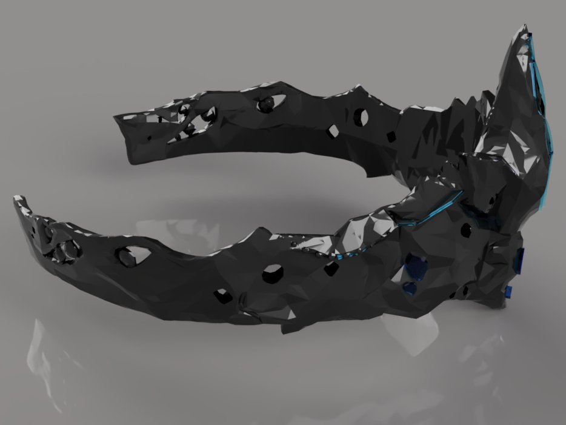
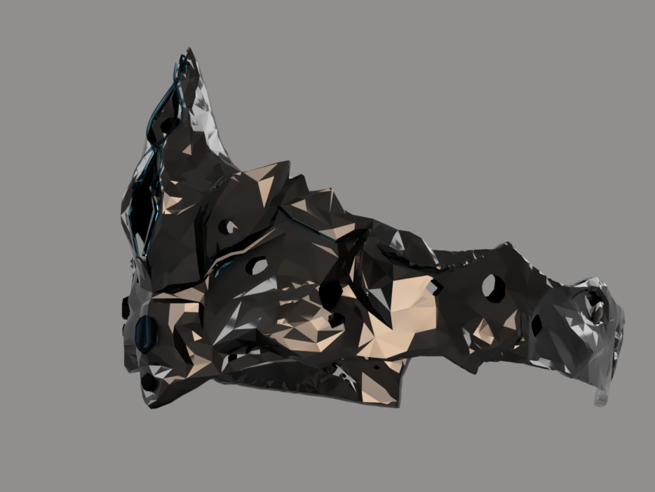
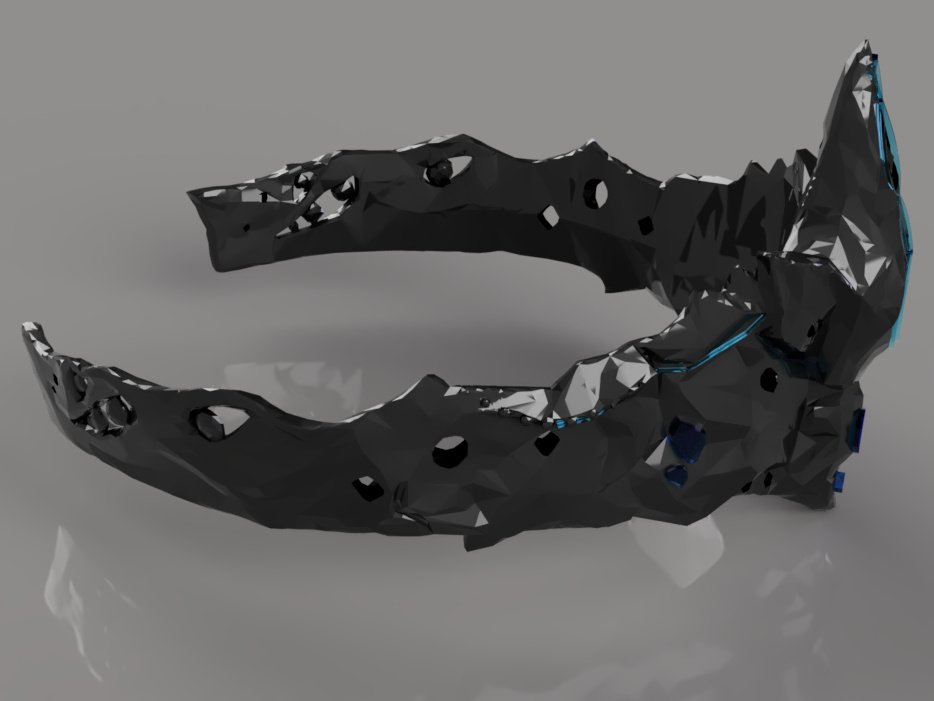
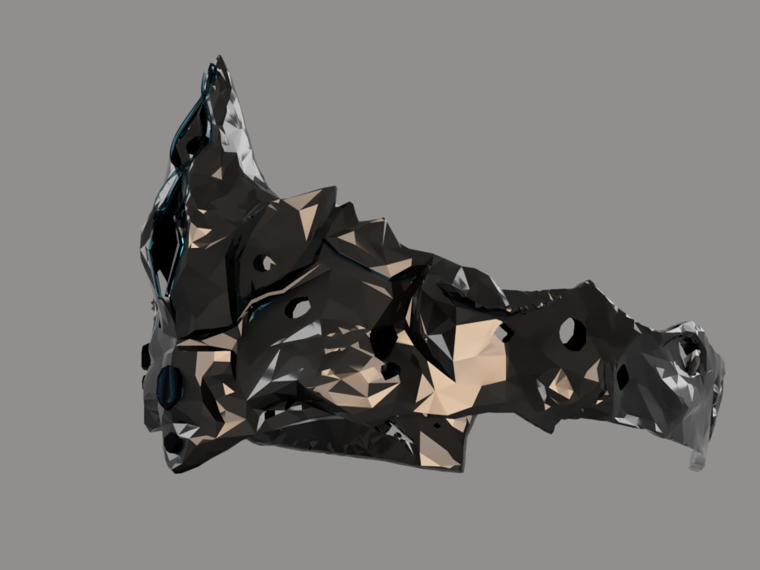
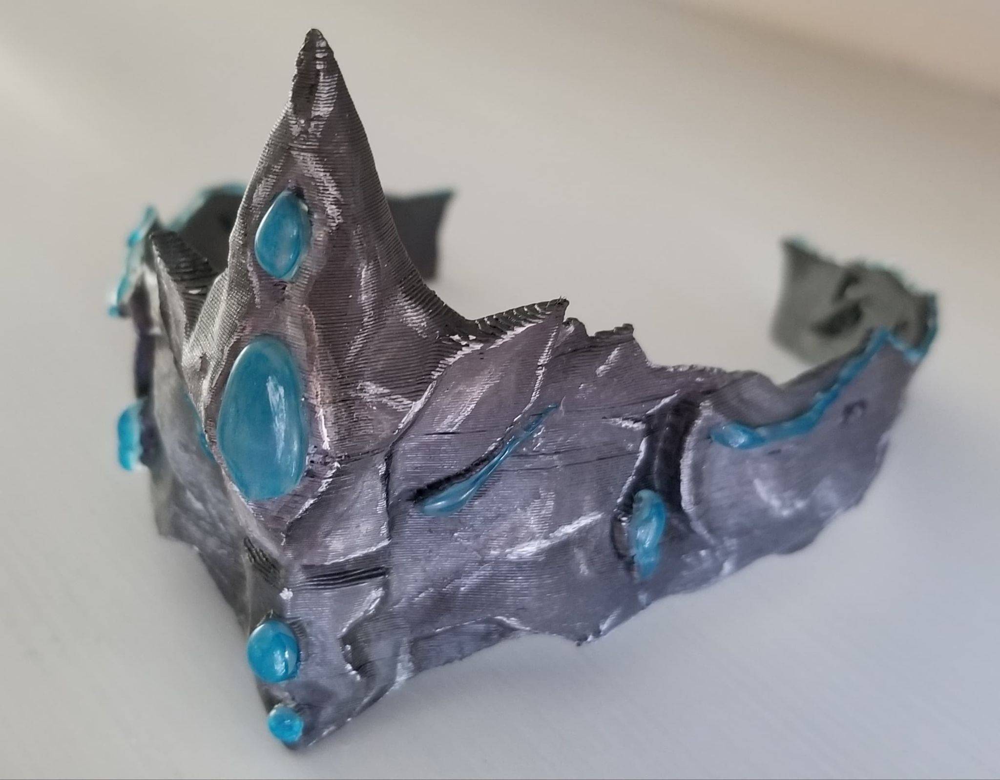

Final Documentation
Artifact Documentary
P.U.R.I.T.A.N.S Vision Mask
This is the modeled mask representative of the "P.U.R.I.T.A.N.S" from the 1st Soul Purge War of our Soul Vision universe. Their mask consists of rare soul stones that allow them to see the purity/impurity of individual's souls for long periods
of time without visual damage. The mask sits directly on their eyes, snug on the front of their face. The P.U.R.I.T.A.N.S group is in search of souls that have been snatched by the "Dhark" Cult.

.jpg) 

***Note: My timeline doesn't show because I had to select "Don't Capture Design History" in order to convert the Mesh to BRep and create a Body for me to manipulate***


***Note: My timeline doesn't show because I had to select "Don't Capture Design History" in order to convert the Mesh to BRep and create a Body for me to manipulate***
3D Printed Model

Group Contributions
Eddson
- Video Editing
- Add-on ideas to Script/Clean up storyline
- Soul Goggles 3D Model
- B-Roll for Soul Goggles on characters
- B-Roll for Dhark Soldiers
Jason
- Voice Over/Narration
- Script for Narration
- Soul Pill 3D Model, Turntable, Digital Close Ups, and Camera Video Shots
- Dhark Helmet 3D Model
- B-Roll of Landscapes and Laboratories
- B-Roll with After Effects of P.U.R.I.T.A.N.S Logo and Dhark Logo
Benjamin
- Came up with the foundational plot, Soul Vision, that our project would be about
- Voice Over/Narration
- Add-on ideas to Script/Clean up storyline
- Soul Blocker Goggles 3D Model
- Soul Extractor 3D Model and Turntable
-
My Contributions
- P.U.R.I.T.A.N.S Mask 3D Model, Turntable, and Camera Video Shots
- Add-on ideas to Script/Clean up storyline
- B-Roll for P.U.R.I.T.A.N.S Warriors
- B-Roll for Laboratories and War Scenes
- B-Roll with After Effects for Displays of Souls